ECG Video Blog #406 — Có nên ghi thêm chuyển đạo?
======================================
BẤM VÀO ĐÂY — để xem Video trình bày ca này! (19:40 phút)
- Dưới đây là các slide dùng trong video trình bày của tôi.
- Để xem bàn luận đầy đủ về ca này — Xem ECG Blog #351 —
======================================
Điện tâm đồ ở Hình 1 — được ghi từ một người đàn ông lớn tuổi, trước đó khỏe mạnh, đã gọi EMS (đội cấp cứu ngoài viện — Emergency Medical Services) vì "tức ngực" bắt đầu khoảng ~1 giờ trước đó. Với bệnh sử này:
CÂU HỎI:
- BẠN sẽ đọc điện tâm đồ ở Hình 1 như thế nào?
- Có nên kích hoạt phòng thông tim (cath lab) không?

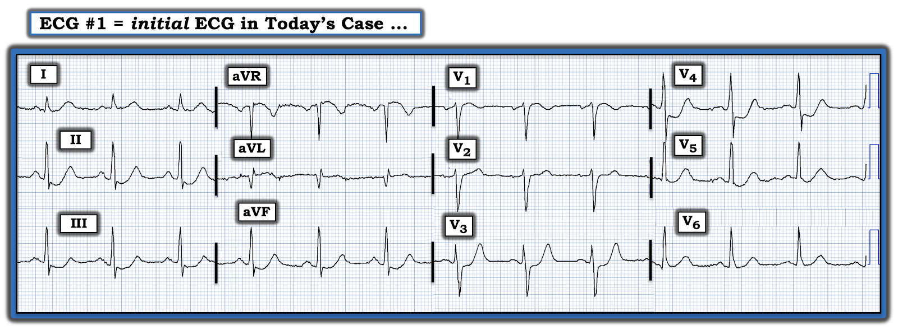

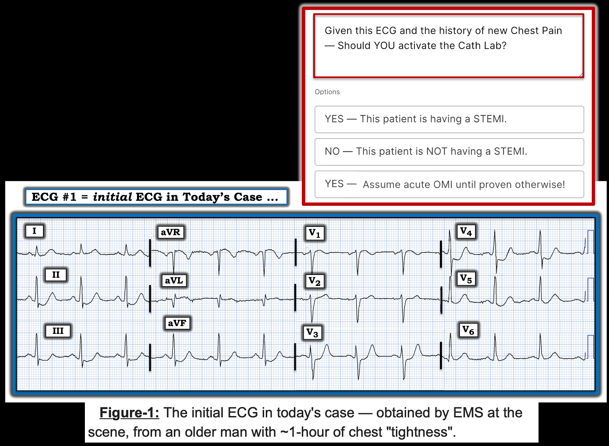

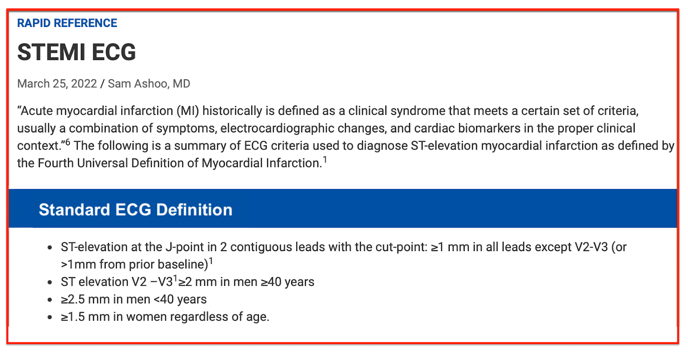

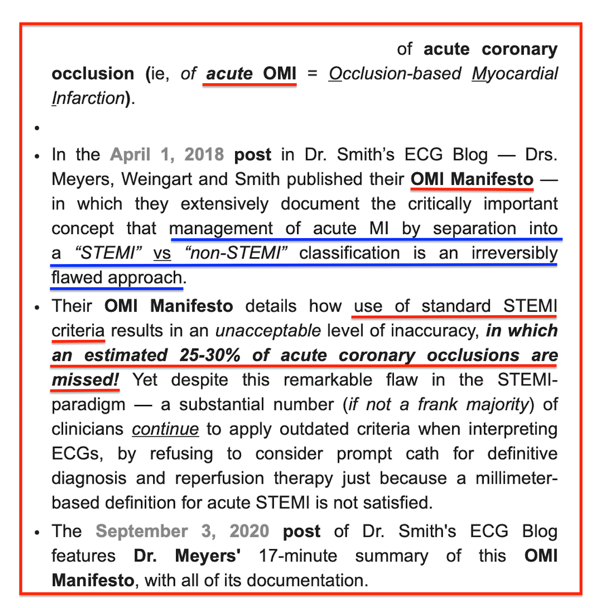

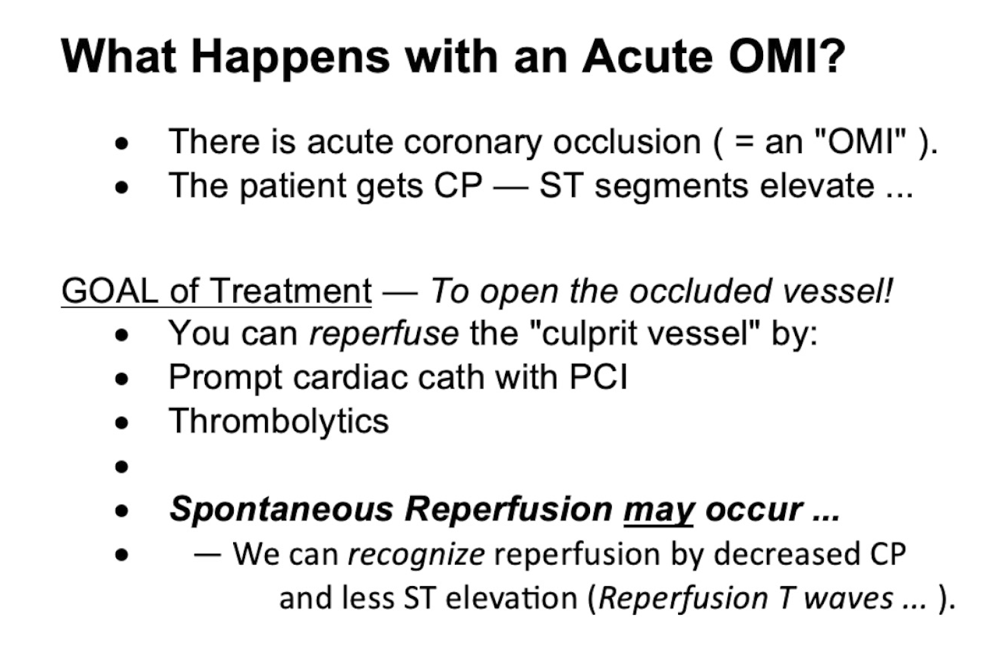

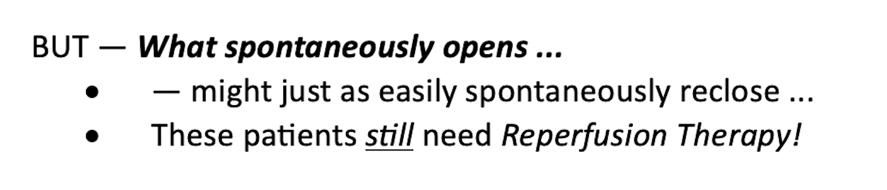

Hình 4: Các dấu hiệu điện tâm đồ cần tìm khi bệnh nhân của bạn có triệu chứng tim mới khởi phát nhưng không biểu hiện ST chênh lên đạt tiêu chuẩn STEMI trên điện tâm đồ. Để biết thêm về chủ đề này — XEM bài ngày 3 tháng 9 năm 2020 trên ECG Blog của Dr. Smith, kèm bài giảng video 20 phút của Dr. Meyers về The OMI Manifesto. Về Hình minh họa làm rõ của tôi về T-QRS-D (biến dạng phần cuối QRS) (gạch đầu dòng thứ 2) — Xem Bình luận của tôi ở cuối trang trong bài ngày 14 tháng 11 năm 2019 của Dr. Smith.

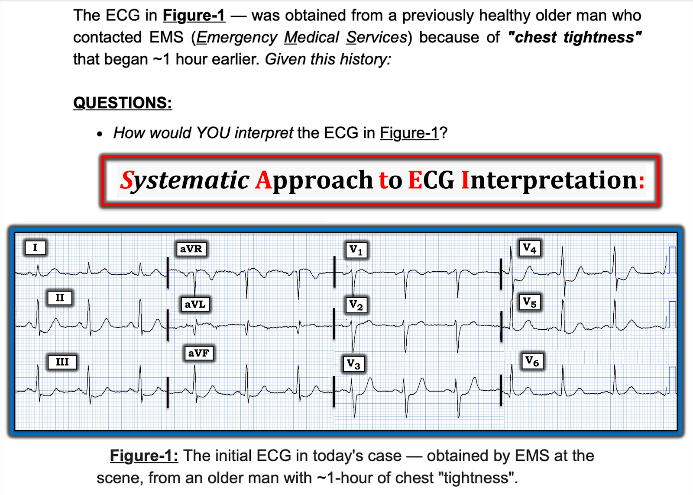

============================
ECG Blog #205 = Cách tiếp cận Hệ thống mà tôi ưa dùng ...
- "Công thức" = https://tinyurl.com/KG-Blog-2XX
- ĐƯỜNG LINK tới Blog #205 = https://tinyurl.com/KG-Blog-205 -
============================

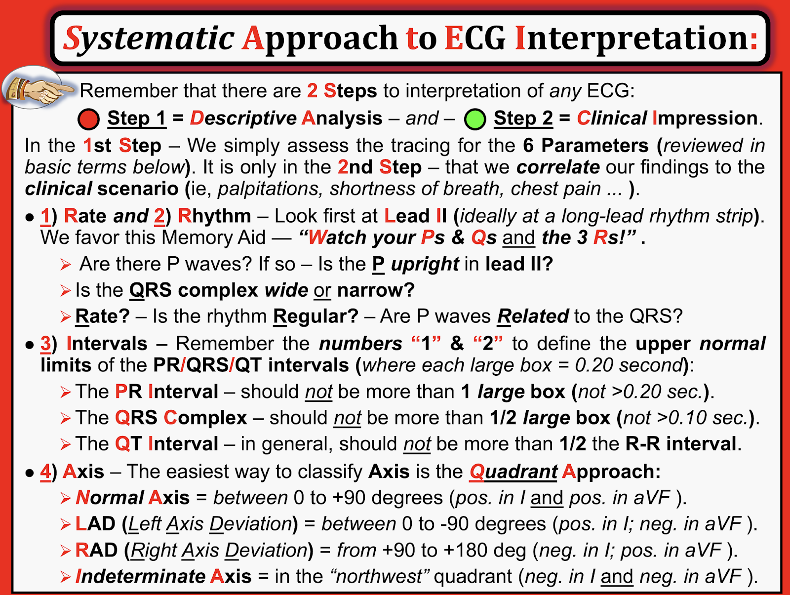

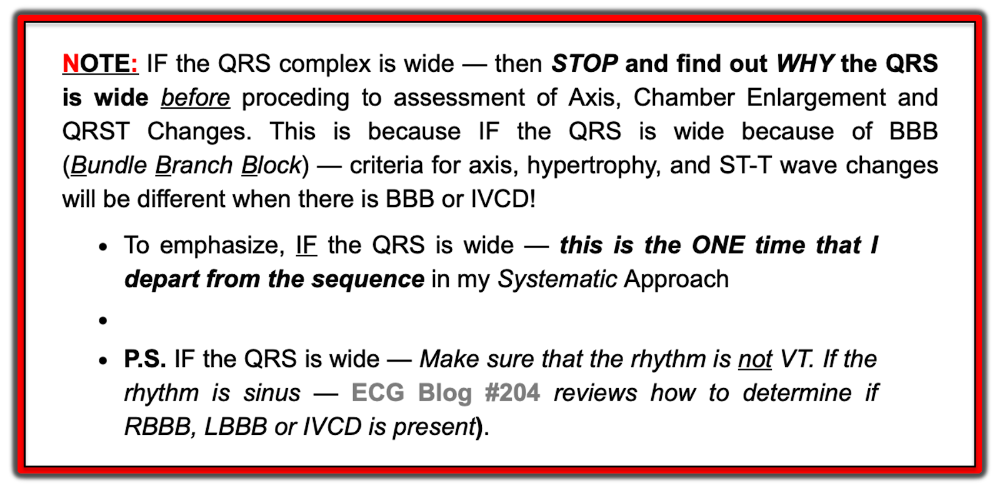

=======================================

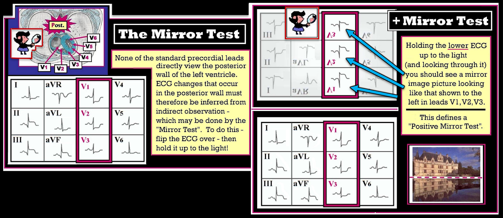

Hình: Tôi đã thêm hình ảnh soi gương của chuyển đạo V3 và V4 vào bản ghi hôm nay — để minh họa việc điện tâm đồ ban đầu cho thấy nghiệm pháp "Soi gương" (Mirror Test) dương tính gợi ý OMI thành sau cấp.

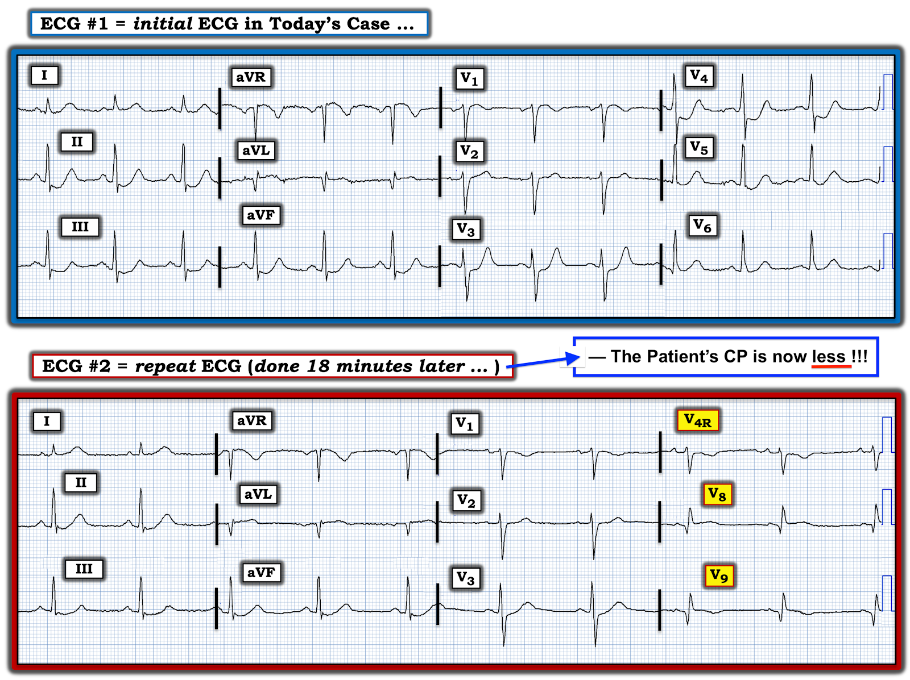

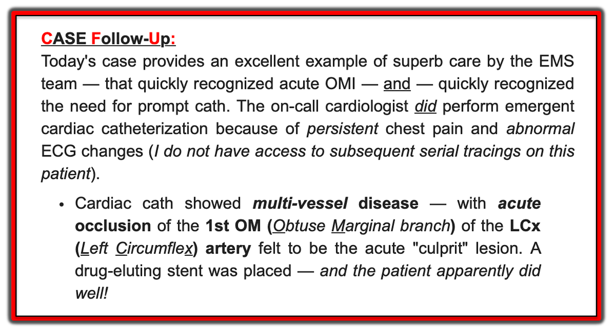

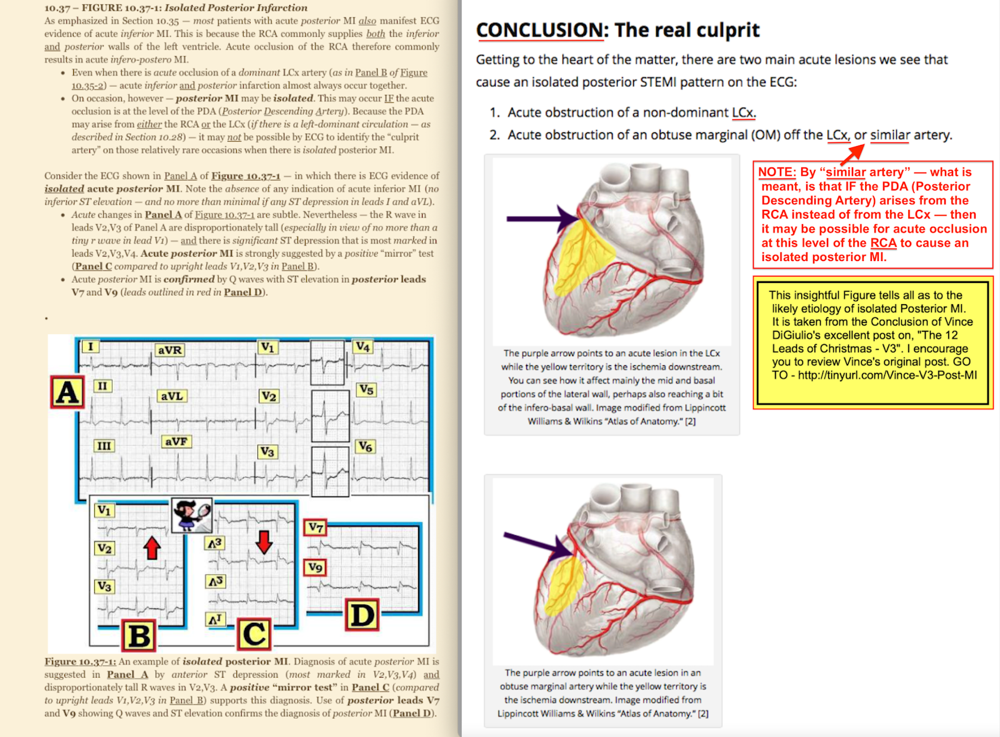
===============================
Các Bài ECG Blog liên quan đến ca hôm nay:
- ECG Blog #205 — Ôn lại Cách tiếp cận Hệ thống của tôi khi đọc điện tâm đồ 12 chuyển đạo.
- ECG Blog #193 — minh họa cách dùng Nghiệm pháp Soi gương (Mirror Test) để dễ nhận ra nhồi máu cơ tim thành sau cấp. Bài này ôn lại những điều cơ bản để dự đoán Động mạch "Thủ phạm" (đồng thời ôn lại vì sao thuật ngữ "STEMI" — nên được thay bằng "OMI" = nhồi máu cơ tim dựa trên tình trạng tắc mạch (Occlusion-based MI)).
- ECG Blog #285 — một ví dụ khác về nhồi máu cơ tim thành sau cấp (với kết quả dương tính của nghiệm pháp Soi gương – Mirror Test).
- ECG Blog #246 — một ví dụ khác về nhồi máu cơ tim thành sau cấp (với kết quả dương tính của nghiệm pháp Soi gương – Mirror Test).
- ECG Blog #80 — ôn lại cách dự đoán động mạch "thủ phạm" (và đưa thêm một ca minh họa nghiệm pháp Soi gương (Mirror Test) trong chẩn đoán nhồi máu cơ tim thành sau cấp).
- ECG Blog #317 — ôn lại một ca khác liên quan đến việc dùng (hay không dùng) chuyển đạo phía sau.
- ECG Blog #184 — minh họa mối quan hệ đối nghịch soi gương "kỳ diệu" khi có thiếu máu cục bộ cấp giữa chuyển đạo III và chuyển đạo aVL (được trình bày trong Audio Pearl #2 của bài này).
- ECG Blog #167 — một ca khác về mối quan hệ đối nghịch soi gương "kỳ diệu" giữa chuyển đạo III và chuyển đạo aVL đã xác nhận OMI cấp.
- Bài ngày 16 tháng 2 năm 2019 trên ECG Blog của Dr. Smith — Bình luận của tôi (ở cuối trang) nhấn mạnh giá trị của nghiệm pháp Soi gương (Mirror Test) trong chẩn đoán nhồi máu cơ tim thành sau cấp.
- Chẩn đoán OMI từ điện tâm đồ ban đầu — Các bản ghi liên tiếp cho thấy tái tưới máu tự phát — rồi tắc lại! — Xem Bình luận của tôi ở cuối trang trong bài ngày 14 tháng 10 năm 2020 trên ECG Blog của Dr. Smith.
- OMI cấp không được bác sĩ phụ trách (Attending) chấp nhận — Xem Bình luận của tôi ở cuối trang trong bài ngày 21 tháng 11 năm 2020 trên ECG Blog của Dr. Smith.
- Một OMI khác bị bỏ sót (Bác sĩ tim mạch bị bó buộc bởi Định nghĩa STEMI — OMI hiển nhiên qua nghiệm pháp Soi gương) — Xem Bình luận của tôi ở cuối trang trong bài ngày 21 tháng 9 năm 2020 trên ECG Blog của Dr. Smith.
- Nhận diện sóng T tối cấp — các nhóm chuyển đạo — một OMI (dù không phải STEMI) — Xem Bình luận của tôi ở cuối trang trong bài ngày 8 tháng 11 năm 2020 trên ECG Blog của Dr. Smith.
- ECG Blog #271 — Ôn lại cách xác định đường nền của đoạn ST (kèm bàn luận về thực thể thiếu máu cục bộ dưới nội tâm mạc lan tỏa).
- ECG Blog #266 — Ôn lại cách phân biệt Nhồi máu cơ tim thành sau với sóng T deWinter (với phần cuối sóng T dương ở các chuyển đạo trước tim phản ánh sóng T "tái tưới máu" – Reperfusion T-waves).
- ECG Blog #258 — Cách "Định tuổi" nhồi máu dựa trên điện tâm đồ ban đầu.
- ECG Blog #294 — Ôn lại cách nhận biết LIỆU động mạch "thủ phạm" đã được tái tưới máu hay chưa.
- ECG Blog #230 — Ôn lại cách so sánh các điện tâm đồ liên tiếp.
- ECG Blog #115 — Cho thấy thay đổi ST-T có thể xảy ra mạnh mẽ đến mức nào chỉ trong vòng 8 phút.
- ECG Blog #268 — Một ví dụ về sóng T tái tưới máu.
- ECG Blog #190 — Cách chẩn đoán nhồi máu thất phải (RV MI) cấp (và cách dùng chuyển đạo bên phải).